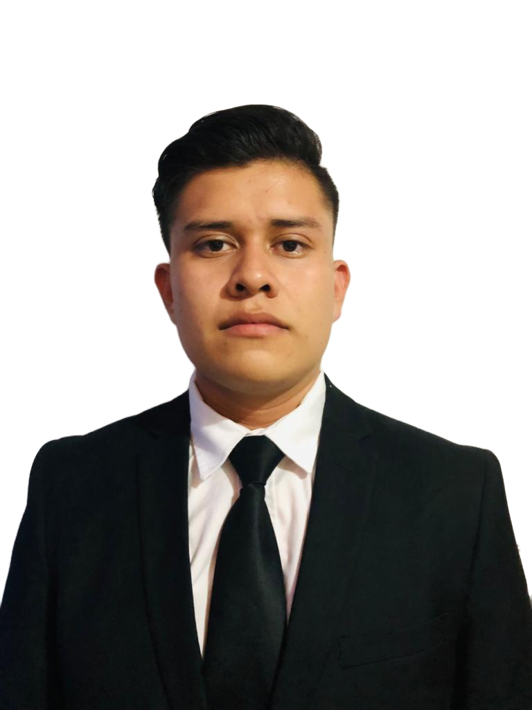
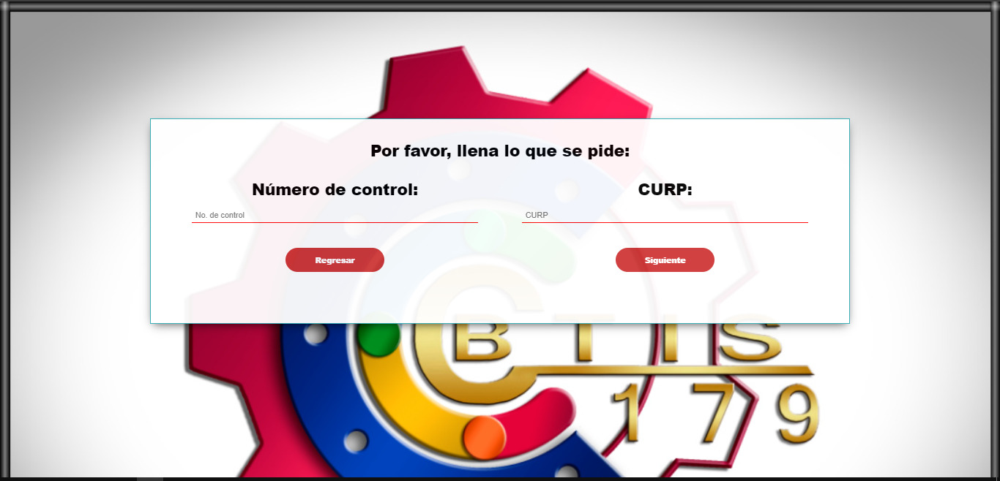
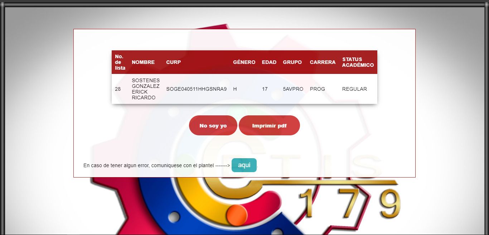
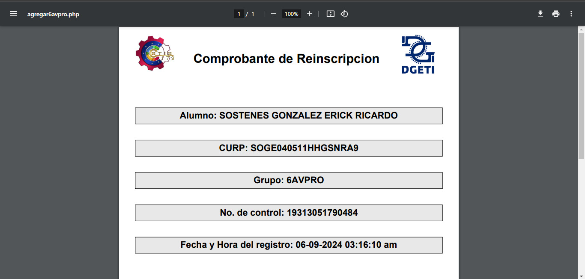
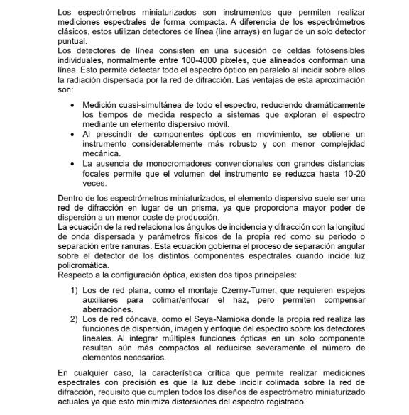
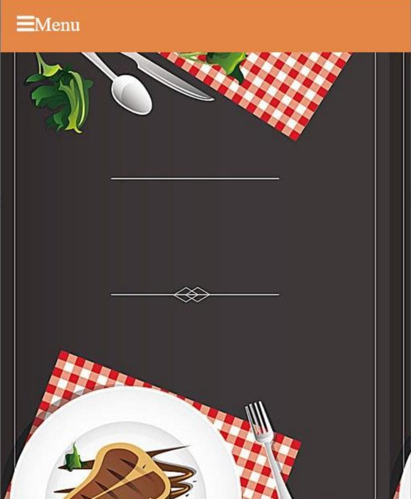
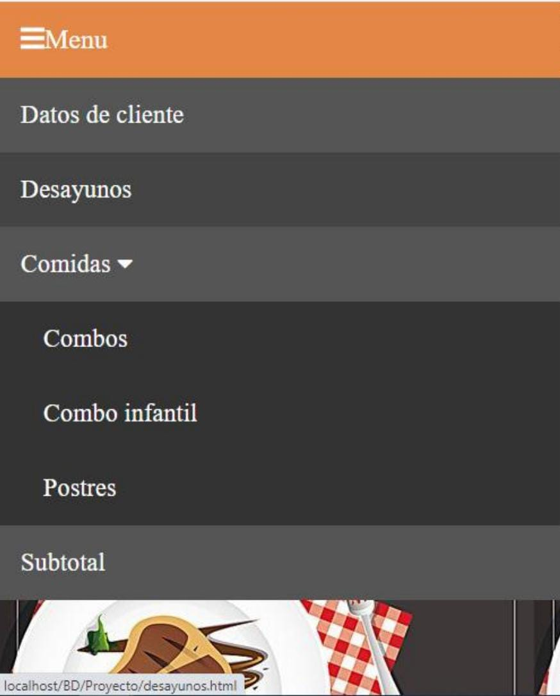

Bienvenido a mi Portafolio Personal
Soy un estudiante apasionado por el desarrollo de software, finanzas, trading, ciberseguridad y dropshipping. Mi objetivo es aplicar mis habilidades en programación y análisis de sistemas para contribuir al éxito de empresas fintech o plataformas de comercio electrónico que valoren la innovación y la seguridad digital.
 Ver proyectosAcerca de mí
Actualmente curso el tercer año de Ingeniería en Sistemas Computacionales en la Universidad Politécnica de Tulancingo. Me destaco por mi capacidad de liderazgo, resolución de problemas y aprendizaje continuo.
Formación académica y certificaciones
- Ingeniería en Sistemas Computacionales (en curso) - Universidad Politécnica de Tulancingo
- Certificación en lenguaje de programación R
- Certificación en programación estructurada
- Certificaciones CISCO en redes (Introducción a redes, Switching, Routing y dispositivos esenciales, Interconexión de redes)
- Certificación de Google Activate en desarrollo de aplicaciones móviles
- Certificaciones en administración de bases de datos (SOLOLEARN y Aprende)
Competencias
- Lenguajes de programación: Java, JavaScript, PHP, Python, Bash, C#, Dart y Flutter
- Programas: Ubuntu, Virtual Box, Shopify y MetaTrader
- Habilidades blandas: Trabajo en equipo, liderazgo, resolución de problemas, gestión de tiempo, administración de recursos, negociación, empatía y aprendizaje continuo
- Idiomas: Inglés - nivel intermedio (B1)
Intereses personales
Fuera del ámbito profesional, asisto al gimnasio entre 4-5 días a la semana. También soy músico aficionado, tocando el bajo, la guitarra y sintetizadores digitales. Disfruto cantar y realizar música o covers combinando estas habilidades.
Proyectos
Sistema de Reinscripción para CBTis 179
Desarrollé junto a un equipo un sistema de reinscripción utilizando JS, PHP y MySQL. Desempeñé roles de scrum master y desarrollador. El sistema mejoró la eficiencia de reinscripción en un 50%.
Duración: 3 meses (01/11/2021 – 01/02/2022)
Impacto: Implementado en la página oficial de la institución
  
Investigación en Espectroscopia Biomédica
Realicé una investigación utilizando BWSpec, Exemplar y fuentes de luz halógena durante mi estancia en la UPT.

Sistemas de Ventas para Restaurantes
Desarrollé sistemas CRUD para negocios, empleando tecnologías como JS, C#, CSS, HTML, SQL Server y MySQL.
 
Comercialización de Ropa en Línea
Proyecto personal en desarrollo para la venta de ropa en línea y en físico, incluye un sistema gestor.
Servicios
- Desarrollo de aplicaciones web y móviles
- Diseño y administración de bases de datos
- Consultoría en ciberseguridad
- Asesoría en comercio electrónico y dropshipping
- Desarrollo de sistemas de gestión empresarial
- Análisis y optimización de sistemas
Reconocimientos
- Reconocimiento de mejores promedios dentro de las ingenierías con un total de 9.9/10
- Múltiples certificaciones en programación, redes y desarrollo móvil
Contacto
Correo: erickrsg2004@gmail.com
Teléfono: +52 775 173 5168
Dirección: Tulancingo de Bravo, Hidalgo 43600
LinkedIn: Perfil de LinkedIn